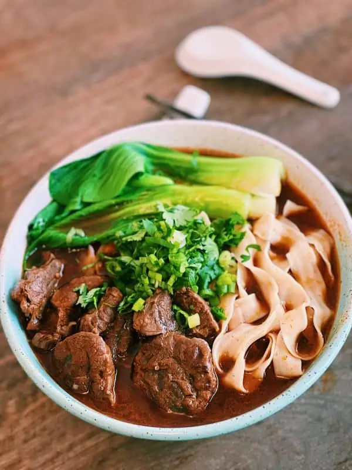

Instant Pot Taiwanese Beef Noodle Soup

Description
I personally am obsessed with noodle soups as I find it very comforting and warming for the heart.
It is more so comforting in my Asian culture as we have noodle soups for when we are sick and who doesn't love slurping in these instances?
This recipe is great if you don't have much time as this soup usually takes around 6 hours or so but this recipe makes it in under an hour!
This savory noodle soup is also paired with fresh green onions and cilantro as a garnish which brings the whole dish together.
Ingredients
- boneless beef shank
- ginger
- garlic
- onion
- tomato
- doubanjiang
- sugar
- soy sauce
- dark soy sauce
- shaoxing wine
- water
- star anise
- sichuan peppercorns
- bay leaf
- cinnamon stick
- dried red chili
- white noodles
- cilantro
- green onion
Steps
- Set instant pot to saute setting, drizzle in oil, saute and brown meat for 2-3 minutes.
- Add onion, ginger, and garlic, continue to saute for another 2-3 minutes. Add doubanjiang and sugar and mix for another 1-2 minutes.
- Now pour in soy sauce, dark soy sauce, shaoxing wine, water and all spices then cover with lid.
- Press the pressure cook setting and set it to run for 45 minutes.
- Prepare and cook the toppings and noodles.
- You can strain the soup, but after that just simply assemble and enjoy!